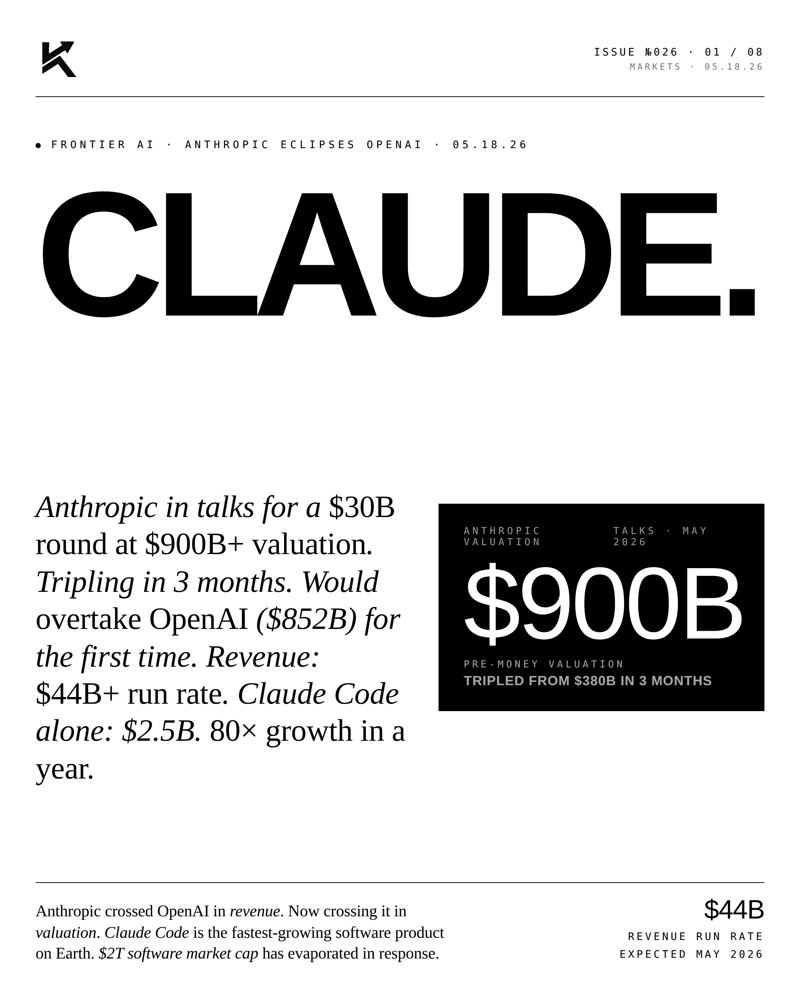
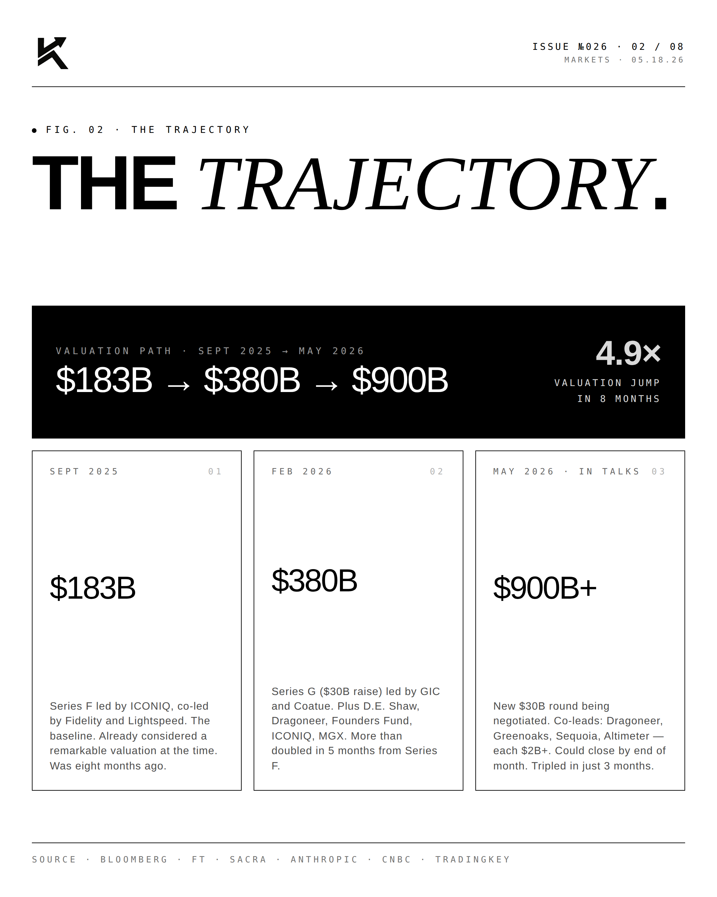
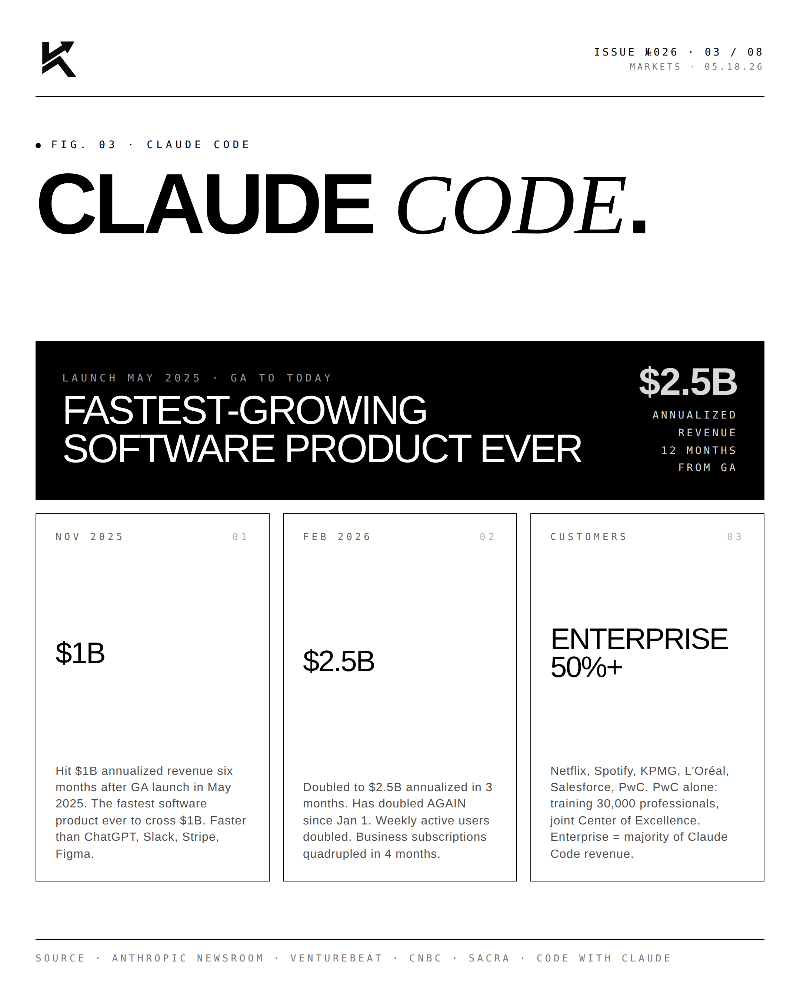
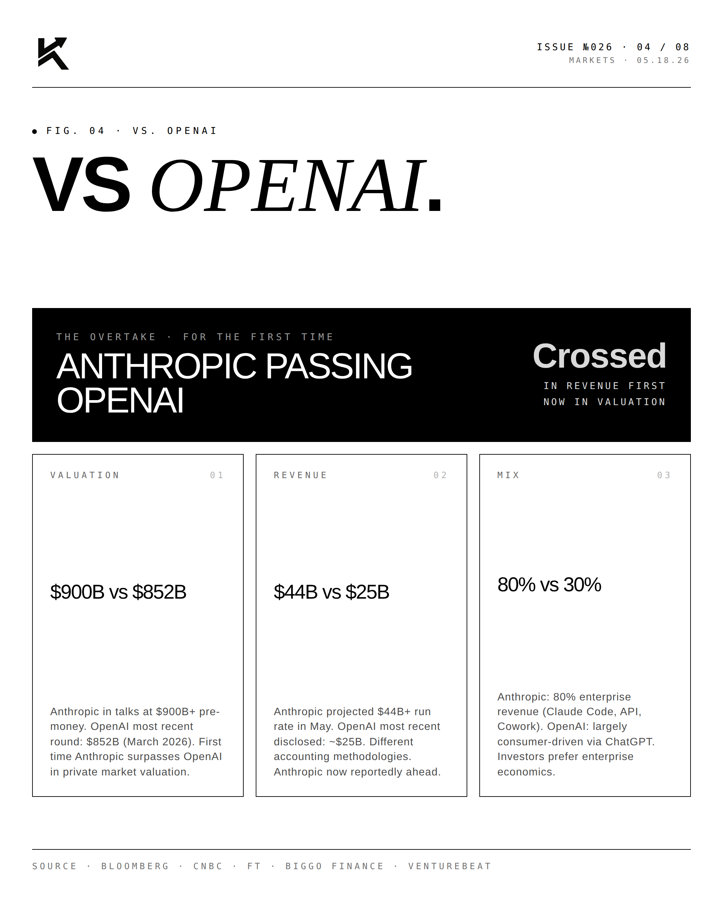
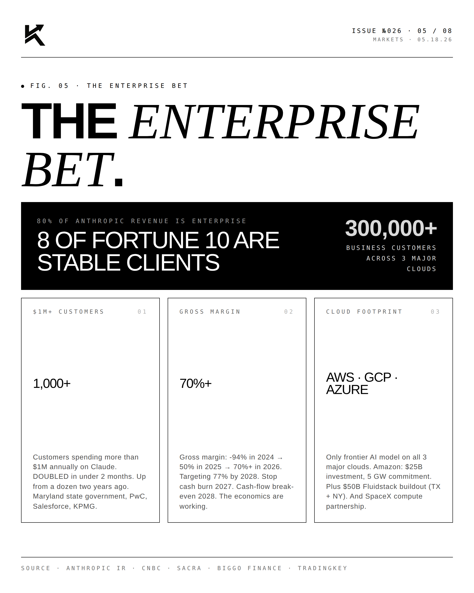
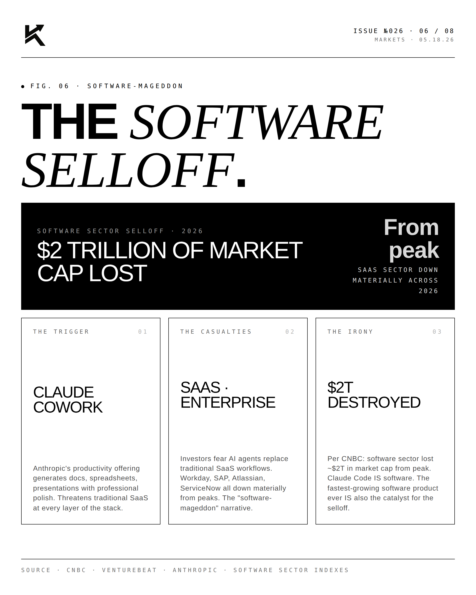
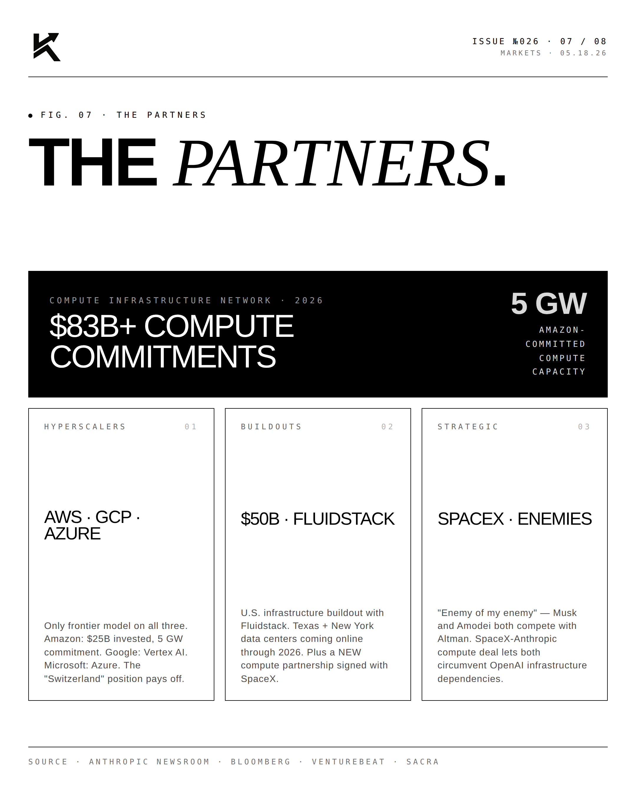
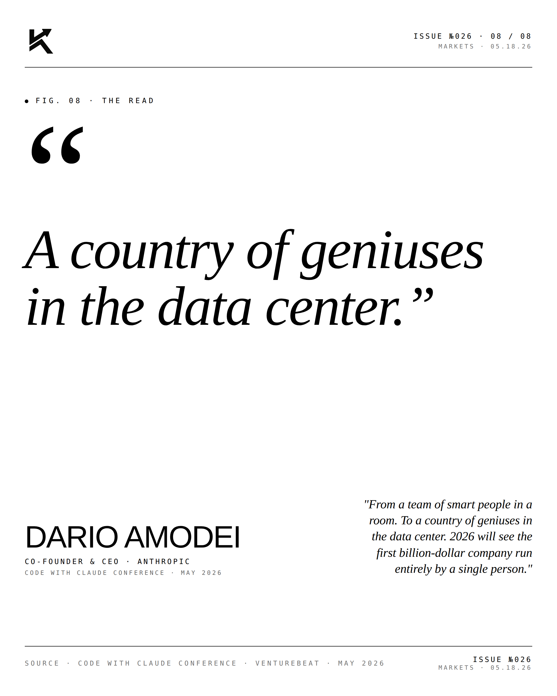

Claude.
Anthropic is in talks for a $30B round at a $900B+ valuation — tripling in three months and, for the first time, overtaking OpenAI ($852B). Revenue: a $44B+ run rate. Claude Code alone: $2.5B, up 80× in a year.

The Lead.
Anthropic crossed OpenAI in revenue. Now it is crossing in valuation. The new round — co-led by Dragoneer, Greenoaks, Sequoia, and Altimeter — would value the company north of $900B pre-money, up from $380B just three months earlier and $183B last September: a roughly 4.9× move in eight months. Claude Code, at a $2.5B run rate, is among the fastest-growing software products on record, and an estimated $2T in public software market cap has repriced in response.






"A country of geniuses
in the data center."DARIO AMODEICo-Founder & CEO · Anthropic · 05.18.26
"From a team of smart people in a room. To a country of geniuses in the data center. 2026 will see the first billion-dollar company run entirely by a single person." — Dario Amodei, Code with Claude Conference.
